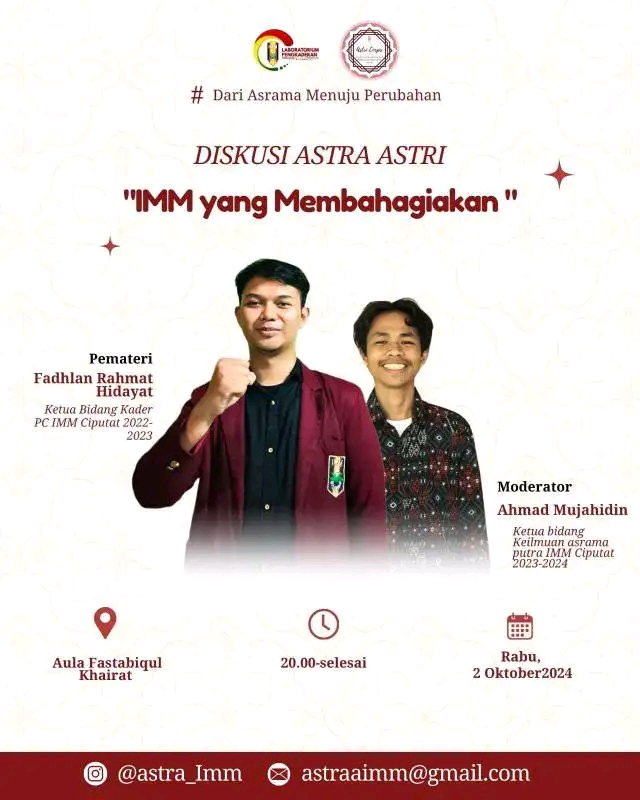

 Bidang keilmuan merupakan salah satu bidang penting dalam structural kepengurusan asrama putra imm ciputat. bagaimana tidak, bidang ini menfasilitasi dan memberikan ruang untuk warga asrama putra untuk mengekspresikan pendapat, berargumentasi, hingga perdebatan intelektual. Dengan kata lain, bidang ini menawarkan kepada warga asrama putra untuk berkembang kearah yang progresif dan meninggalkan berbagai sifat-sifat primitif.